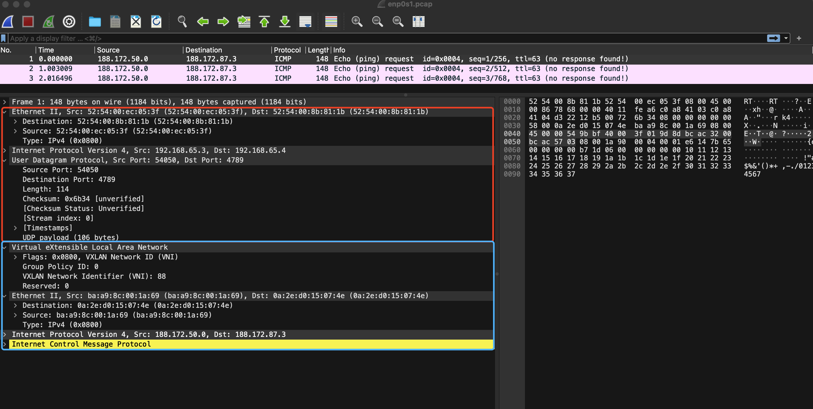

单机场景下，相同主机上的容器会通过 Docker 默认创建的 docker0 网桥以及在启动容器时创建的 veth pair 设备实现互通。而对于跨主机容器通信，社区提供了很多种不同的方案，例如 weaveflannelflannel 为例，实现跨主机容器通信，flannel 有多种后端实现，本文以 VXLAN 为例，动手实践，最终达到的效果如下图所示：
首先在本地准备两台单独的虚拟机，并且安装 docker，这里我使用 multipassdocker1 和 docker2，命令如下：
multipass launch --name docker1 -d 40G docker
最后面的 docker 是镜像名称，因此这不仅创建虚拟机，镜像中已经包含 docker，无需再手动安装。创建成功如下所示：
1 2 3 4 5 6 $ multipass list Name State IPv4 Image docker1 Running 192.168.65.3 Ubuntu 22.04 LTS 152.156.0.1 docker2 Running 192.168.65.4 Ubuntu 22.04 LTS 188.172.0.1
flannel 通过 etcd 保存配置信息以及实现相互发现，为了方便测试，通过 docker 在 docker1 节点上启动一个 etcd 容器:
docker run -it --env ALLOW_NONE_AUTHENTICATION=yes -d --net=host --name etcd bitnami/etcd
这里的 --net=host 让这个容器直接使用 docker1 的网络空间，这样 etcd 服务在启动之后，直接监听在 docker1 上，让 docker2 节点也可以访问：
1 2 3 root@docker1:/home/ubuntu# netstat -tualnp | grep etcd | grep LISTEN tcp 0 0 127.0.0.1:2380 0.0.0.0:* LISTEN 10147/etcd tcp6 0 0 :::2379 :::* LISTEN 10147/etcd
随候使用 etcdctl 写入基础配置信息，这里我们以 vxlan 作为 flannel 的后端实现为例（flannel 没有在 Linux ARM 上实现 UDP），VXLAN（Virtual eXtensible Local Area Network） 全称是虚拟可扩展局域网，利用它可以通过三层的网络来搭建虚拟的二层网络，是一种 overlay 技术：
1 2 3 4 5 6 7 8 9 10 root@docker1:/home/ubuntu# docker exec -itu root etcd bash root@docker1:/opt/bitnami/etcd# root@docker1:/opt/bitnami/etcd# root@docker1:/opt/bitnami/etcd# ETCDCTL_API=3 etcdctl put /coreos.com/network/config '{ "Network": "188.172.0.0/16", "Backend": {"Type": "vxlan", "VNI": 88, "Port": 4789}}' OK root@docker1:/opt/bitnami/etcd# root@docker1:/opt/bitnami/etcd# ETCDCTL_API=3 etcdctl get /coreos.com/network/config /coreos.com/network/config { "Network": "188.172.0.0/16", "Backend": {"Type": "vxlan", "VNI": 88, "Port": 4789}} root@docker1:/opt/bitnami/etcd#
flannel从 flannel releasedocker1 节点启动：
1 2 3 4 5 6 7 8 9 10 11 12 13 14 15 16 17 18 19 20 21 22 23 24 25 26 27 28 29 30 root@docker1:/home/ubuntu# ifconfig enp0s1 enp0s1: flags=4163<UP,BROADCAST,RUNNING,MULTICAST> mtu 1500 inet 192.168.65.3 netmask 255.255.255.0 broadcast 192.168.65.255 inet6 fd5e:5a21:c847:d0a:5054:ff:feec:53f prefixlen 64 scopeid 0x0<global> inet6 fe80::5054:ff:feec:53f prefixlen 64 scopeid 0x20<link> ether 52:54:00:ec:05:3f txqueuelen 1000 (Ethernet) RX packets 362118 bytes 482538415 (482.5 MB) RX errors 0 dropped 0 overruns 0 frame 0 TX packets 135807 bytes 49525485 (49.5 MB) TX errors 0 dropped 0 overruns 0 carrier 0 collisions 0 root@docker1:/home/ubuntu# root@docker1:/home/ubuntu# ./flanneld --public-ip=192.168.65.3 --etcd-endpoints=http://192.168.65.3:2379 --etcd-prefix=/coreos.com/network --iface=enp0s1 -v=1 .... 1213 21:10:00.526262 11516 main.go:541] Found network config - Backend type: vxlan I1213 21:10:00.526492 11516 match.go:259] Using interface with name enp0s1 and address 192.168.65.3 I1213 21:10:00.526513 11516 match.go:277] Using 192.168.65.3 as external address I1213 21:10:00.526567 11516 vxlan.go:141] VXLAN config: VNI=88 Port=4789 GBP=false Learning=false DirectRouting=false I1213 21:10:00.526669 11516 device.go:84] VXLAN device already exists I1213 21:10:00.526758 11516 device.go:92] Returning existing device I1213 21:10:00.527879 11516 local_manager.go:150] Found lease (ip: 188.172.50.0/24 ipv6: ::/0) for current IP (192.168.65.3), reusing I1213 21:10:00.531052 11516 main.go:406] Changing default FORWARD chain policy to ACCEPT I1213 21:10:00.535741 11516 iptables.go:290] generated 3 rules I1213 21:10:00.535842 11516 main.go:434] Wrote subnet file to /run/flannel/subnet.env I1213 21:10:00.535961 11516 main.go:438] Running backend. I1213 21:10:00.536578 11516 vxlan_network.go:65] watching for new subnet leases I1213 21:10:00.537747 11516 registry.go:291] registry: watching subnets starting from rev 9 I1213 21:10:00.538296 11516 local_manager.go:314] manager.WatchLease: sending reset results... I1213 21:10:00.538695 11516 local_manager.go:391] Waiting for 22h59m58.999602208s to renew lease I1213 21:10:00.551763 11516 iptables.go:283] bootstrap done
flanneld 进程启动参数中，--public-ip 和 --iface 用于表示跨主机通信的是网络报文出口，相当于公网IP，他们二选一即可，为了示例，两者都展示。--etcd-prefix 指定我们存储在 etcd 中的配置前缀，--etcd-endpoints 指定 etcd 地址。flanneld 启动之后，从输出的日志中可以看到 从 etcd 读取配置，写入配置文件到 /run/flannel/subnet.env：
1 2 3 4 5 root@docker1:/home/ubuntu# cat /run/flannel/subnet.env FLANNEL_NETWORK=188.172.0.0/16 FLANNEL_SUBNET=188.172.50.1/24 FLANNEL_MTU=1450 FLANNEL_IPMASQ=false
并且创建 vetp 设备以及监听 4789 端口：
1 2 3 4 5 6 7 8 9 10 11 root@docker1:/home/ubuntu# netstat -tualnp | grep 4789 udp 0 0 0.0.0.0:4789 0.0.0.0:* - root@docker1:/home/ubuntu# ifconfig flannel.88 flannel.88: flags=4163<UP,BROADCAST,RUNNING,MULTICAST> mtu 1450 inet 188.172.50.0 netmask 255.255.255.255 broadcast 0.0.0.0 inet6 fe80::b8a9:8cff:fe00:1a69 prefixlen 64 scopeid 0x20<link> ether ba:a9:8c:00:1a:69 txqueuelen 0 (Ethernet) RX packets 0 bytes 0 (0.0 B) RX errors 0 dropped 0 overruns 0 frame 0 TX packets 0 bytes 0 (0.0 B) TX errors 0 dropped 5 overruns 0 carrier 0 collisions 0
然后在 docker2 节点上同样启动 flanneld 进程。启动命令：
1 2 3 4 5 6 7 8 9 10 11 12 13 14 15 16 17 18 19 20 21 22 23 24 25 26 27 28 29 30 31 32 33 root@docker2:/home/ubuntu# ifconfig enp0s1 enp0s1: flags=4163<UP,BROADCAST,RUNNING,MULTICAST> mtu 1500 inet 192.168.65.4 netmask 255.255.255.0 broadcast 192.168.65.255 inet6 fe80::5054:ff:fe8b:811b prefixlen 64 scopeid 0x20<link> inet6 fd5e:5a21:c847:d0a:5054:ff:fe8b:811b prefixlen 64 scopeid 0x0<global> ether 52:54:00:8b:81:1b txqueuelen 1000 (Ethernet) RX packets 253941 bytes 359657656 (359.6 MB) RX errors 0 dropped 0 overruns 0 frame 0 TX packets 62818 bytes 5787379 (5.7 MB) TX errors 0 dropped 0 overruns 0 carrier 0 collisions 0 root@docker2:/home/ubuntu# ./flanneld --public-ip=192.168.65.4 --etcd-endpoints=http://192.168.65.3:2379 --etcd-prefix=/coreos.com/network --iface=enp0s1 -v=1 .... W1213 21:32:07.346075 10352 main.go:594] no subnet found for key: FLANNEL_SUBNET in file: /run/flannel/subnet.env W1213 21:32:07.346080 10352 main.go:629] no subnet found for key: FLANNEL_IPV6_SUBNET in file: /run/flannel/subnet.env W1213 21:32:07.346178 10352 registry.go:84] no certificate provided: connecting to etcd with http. This is insecure I1213 21:32:07.346963 10352 main.go:230] Created subnet manager: Etcd Local Manager with Previous Subnet: None I1213 21:32:07.346976 10352 main.go:233] Installing signal handlers I1213 21:32:07.351652 10352 main.go:541] Found network config - Backend type: vxlan I1213 21:32:07.352061 10352 match.go:259] Using interface with name enp0s1 and address 192.168.65.4 I1213 21:32:07.352124 10352 match.go:277] Using 192.168.65.4 as external address I1213 21:32:07.352214 10352 vxlan.go:141] VXLAN config: VNI=88 Port=4789 GBP=false Learning=false DirectRouting=false I1213 21:32:07.375024 10352 local_manager.go:218] Picking subnet in range 188.172.1.0 ... 188.172.255.0 I1213 21:32:07.378721 10352 local_manager.go:201] Allocated lease (ip: 188.172.87.0/24 ipv6: ::/0) to current node (192.168.65.4) I1213 21:32:07.379027 10352 main.go:406] Changing default FORWARD chain policy to ACCEPT I1213 21:32:07.382355 10352 main.go:434] Wrote subnet file to /run/flannel/subnet.env I1213 21:32:07.382366 10352 main.go:438] Running backend. I1213 21:32:07.382583 10352 iptables.go:290] generated 3 rules I1213 21:32:07.382947 10352 vxlan_network.go:65] watching for new subnet leases I1213 21:32:07.384875 10352 local_manager.go:314] manager.WatchLease: sending reset results... I1213 21:32:07.385212 10352 local_manager.go:391] Waiting for 22h59m58.999662798s to renew lease I1213 21:32:07.386248 10352 registry.go:291] registry: watching subnets starting from rev 10 ...
这同样在 docker2 节点上生成 flannel.88 配置文件以及 /run/flannel/subnet.env：
1 2 3 4 5 6 7 8 9 10 11 12 13 14 15 16 17 18 root@docker2:/home/ubuntu# netstat -tualnp | grep 4789 udp 0 0 0.0.0.0:4789 0.0.0.0:* - root@docker2:/home/ubuntu# ifconfig flannel.88 flannel.88: flags=4163<UP,BROADCAST,RUNNING,MULTICAST> mtu 1450 inet 188.172.87.0 netmask 255.255.255.255 broadcast 0.0.0.0 inet6 fe80::82e:d0ff:fe15:74e prefixlen 64 scopeid 0x20<link> ether 0a:2e:d0:15:07:4e txqueuelen 0 (Ethernet) RX packets 0 bytes 0 (0.0 B) RX errors 0 dropped 0 overruns 0 frame 0 TX packets 0 bytes 0 (0.0 B) TX errors 0 dropped 5 overruns 0 carrier 0 collisions 0 root@docker2:/home/ubuntu# cat /run/flannel/subnet.env FLANNEL_NETWORK=188.172.0.0/16 FLANNEL_SUBNET=188.172.87.1/24 FLANNEL_MTU=1450 FLANNEL_IPMASQ=false root@docker2:/home/ubuntu#
从自动生成的配置文件可以看出，flanneld 为每个节点配置了不同的子网，docker1 节点：188.172.50.1/24，docker2 节点的 188.172.87.1/24。
然而在 docker2 上的 flanneld 进程启动之后，两个节点还会互相发现，互相添加对方的路由信息：
在 docker1 节点上会添加如下的路由信息：
1 2 3 4 5 6 7 root@docker1:/home/ubuntu# route -n Kernel IP routing table Destination Gateway Genmask Flags Metric Ref Use Iface 0.0.0.0 192.168.65.1 0.0.0.0 UG 100 0 0 enp0s1 188.172.50.0 0.0.0.0 255.255.255.0 U 0 0 0 docker0 188.172.87.0 188.172.87.0 255.255.255.0 UG 0 0 0 flannel.88 ...
有了这条路由信息，操作系统就可以知道凡是发往 188.172.87.0/24 网络的 IP 包，都通过 flannel.88 发出，最后的网关地址是：188.172.87.0，除了添加这条路有信息，还会将 docker2 节点上的 flannel.88 设备对应的 MAC 地址添加在 docker1 节点上：
1 2 root@docker1:/home/ubuntu# ip neigh show dev flannel.88 188.172.87.0 lladdr 0a:2e:d0:15:07:4e PERMANENT
有了这个信息，Linux 内核就可以进行二层网络的封包工作了，不用通过 ARP 进行学习。vxlan 是构建于三层网络之上的二层 overlay 网络，最终的数据还是要通过底层的网络发出去，上面两条信息还不足以在三层网络进行转发。为了在三层网络进行转发数据包，我们还需要知道对对端 veth 设备所在主机的 IP 地址，这也是为什么我们在启动 flanneld 进程通过 --public-ip 或者 --iface 设置该节点的“公网” ip 了。所以在 docker1 节点上的 FDB 数据库中查看到如下信息：
1 2 3 root@docker1:/home/ubuntu# bridge fdb show flannel.88 | grep 0a:2e:d0:15:07:4e 0a:2e:d0:15:07:4e dev flannel.88 dst 192.168.65.4 self permanent root@docker1:/home/ubuntu#
同样在 docker2 节点上会有发往 docker1 节点的路由信息：
1 2 3 4 5 6 7 root@docker2:/home/ubuntu# route -n Kernel IP routing table Destination Gateway Genmask Flags Metric Ref Use Iface 0.0.0.0 192.168.65.1 0.0.0.0 UG 100 0 0 enp0s1 188.172.50.0 188.172.50.0 255.255.255.0 UG 0 0 0 flannel.88 188.172.87.0 0.0.0.0 255.255.255.0 U 0 0 0 docker0 ....
对端 docker1 节点上的 VETH 设备的 MAC 信息：
1 2 3 root@docker2:/home/ubuntu# ip neigh show dev flannel.88 188.172.50.0 lladdr ba:a9:8c:00:1a:69 PERMANENT root@docker2:/home/ubuntu#
将数据发往对端时的“公网” IP：
1 2 root@docker2:/home/ubuntu# bridge fdb show flannel.88 | grep ba:a9:8c:00:1a:69 ba:a9:8c:00:1a:69 dev flannel.88 dst 192.168.65.3 self permanent
到这里两台独立主机的 vxlan 网络就创建好了，我们还可以通过 etcdctl 命令查看它们各自在启动之后写入 etcd 的配置信息：
1 2 3 4 5 6 7 8 9 10 11 root@docker1:/home/ubuntu# docker exec -itu root etcd bash root@docker1:/opt/bitnami/etcd# root@docker1:/opt/bitnami/etcd# root@docker1:/opt/bitnami/etcd# etcdctl get "/coreos.com/network" --prefix=true /coreos.com/network/config { "Network": "188.172.0.0/16", "Backend": {"Type": "vxlan", "VNI": 88, "Port": 4789}} /coreos.com/network/subnets/188.172.50.0-24 {"PublicIP":"192.168.65.3","PublicIPv6":null,"BackendType":"vxlan","BackendData":{"VNI":88,"VtepMAC":"ba:a9:8c:00:1a:69"}} /coreos.com/network/subnets/188.172.87.0-24 {"PublicIP":"192.168.65.4","PublicIPv6":null,"BackendType":"vxlan","BackendData":{"VNI":88,"VtepMAC":"0a:2e:d0:15:07:4e"}} root@docker1:/opt/bitnami/etcd#
将各自的公网IP以及 VETH 设备的 MAC 地址写入 etcd，这样就能互相配置了。
为了让两台独立主机上的容器能够互相访问，我们还得让我们的 docker 网络加入这个 vxlan 网络，搭上这个便车，配置也很简单，就是配置 Dcoekr Daemon，设置 Docker 的网络和 flannel 为节点生成的子网保持一致，例如：
例如，docker1 节点上的子网信息如下：
1 2 3 4 5 root@docker1:/home/ubuntu# cat /run/flannel/subnet.env FLANNEL_NETWORK=188.172.0.0/16 FLANNEL_SUBNET=188.172.50.1/24 FLANNEL_MTU=1450 FLANNEL_IPMASQ=false
所以我们配置 Docker 的网络如下，配置成功之后，重启 Docker：
1 2 3 4 5 6 root@docker1:/home/ubuntu# cat /etc/docker/daemon.json { "bip": "188.172.50.1/24" } root@docker1:/home/ubuntu# root@docker1:/home/ubuntu# systemctl restart docker
配置成功之后，docker0 网桥的地址也会随之自动配置为该子网的第一个地址：
1 2 3 4 5 6 7 8 9 10 11 root@docker1:/home/ubuntu# ifconfig docker0 docker0: flags=4163<UP,BROADCAST,RUNNING,MULTICAST> mtu 1500 inet 188.172.50.1 netmask 255.255.255.0 broadcast 188.172.50.255 inet6 fe80::42:e0ff:fe68:759c prefixlen 64 scopeid 0x20<link> ether 02:42:e0:68:75:9c txqueuelen 0 (Ethernet) RX packets 10154 bytes 728003 (728.0 KB) RX errors 0 dropped 0 overruns 0 frame 0 TX packets 16180 bytes 29419238 (29.4 MB) TX errors 0 dropped 0 overruns 0 carrier 0 collisions 0 root@docker1:/home/ubuntu#
同样对于 docker2 节点，作如下配置：
1 2 3 4 5 6 7 8 9 10 11 12 13 14 15 16 17 18 19 20 21 22 root@docker2:/home/ubuntu# cat /run/flannel/subnet.env FLANNEL_NETWORK=188.172.0.0/16 FLANNEL_SUBNET=188.172.87.1/24 FLANNEL_MTU=1450 FLANNEL_IPMASQ=false root@docker2:/home/ubuntu# root@docker2:/home/ubuntu# vim /etc/docker/daemon.json root@docker2:/home/ubuntu# vim /etc/docker/daemon.json root@docker2:/home/ubuntu# root@docker2:/home/ubuntu# systemctl restart docker root@docker2:/home/ubuntu# root@docker2:/home/ubuntu# ifconfig docker0 docker0: flags=4163<UP,BROADCAST,RUNNING,MULTICAST> mtu 1500 inet 188.172.87.1 netmask 255.255.255.0 broadcast 188.172.87.255 inet6 fe80::42:d1ff:feed:b876 prefixlen 64 scopeid 0x20<link> ether 02:42:d1:ed:b8:76 txqueuelen 0 (Ethernet) RX packets 5017 bytes 310416 (310.4 KB) RX errors 0 dropped 0 overruns 0 frame 0 TX packets 8049 bytes 28882500 (28.8 MB) TX errors 0 dropped 0 overruns 0 carrier 0 collisions 0 root@docker2:/home/ubuntu#
接下来我们在两个节点上各创建一个容器，测试网络是否能够互通，所需要的一些网络工具包可以用下面的命令进行安装：
apt install -y iproute2 net-tools iputils-ping
1 2 3 4 5 6 7 8 9 10 11 12 13 14 15 16 17 18 19 20 21 22 23 24 25 26 27 28 root@docker1:/home/ubuntu# docker run -it -d --name ubuntu1 ubuntu /bin/bash 35014b140eefba55ff91cd04b8da5d0f10acda7e782ce93694daf1d00c1a2cca root@docker1:/home/ubuntu# root@docker1:/home/ubuntu# docker exec -itu root ubuntu1 bash root@35014b140eef:/# root@35014b140eef:/# ifconfig eth0: flags=4163<UP,BROADCAST,RUNNING,MULTICAST> mtu 1500 inet 188.172.50.3 netmask 255.255.255.0 broadcast 188.172.50.255 ether 02:42:bc:ac:32:03 txqueuelen 0 (Ethernet) RX packets 9925 bytes 29107479 (29.1 MB) RX errors 0 dropped 0 overruns 0 frame 0 TX packets 5945 bytes 499073 (499.0 KB) TX errors 0 dropped 0 overruns 0 carrier 0 collisions 0 root@35014b140eef:/# ping -c 3 188.172.87.3 PING 188.172.87.3 (188.172.87.3) 56(84) bytes of data. 64 bytes from 188.172.87.3: icmp_seq=1 ttl=62 time=9.01 ms 64 bytes from 188.172.87.3: icmp_seq=2 ttl=62 time=3.80 ms 64 bytes from 188.172.87.3: icmp_seq=3 ttl=62 time=4.50 ms --- 188.172.87.3 ping statistics --- 3 packets transmitted, 3 received, 0% packet loss, time 2029ms rtt min/avg/max/mdev = 3.796/5.767/9.009/2.310 ms root@35014b140eef:/# root@35014b140eef:/# route -n Kernel IP routing table Destination Gateway Genmask Flags Metric Ref Use Iface 0.0.0.0 188.172.50.1 0.0.0.0 UG 0 0 0 eth0 188.172.50.0 0.0.0.0 255.255.255.0 U 0 0 0 eth0
1 2 3 4 5 6 7 8 9 10 11 12 13 14 15 16 17 18 19 20 21 22 23 24 25 26 27 28 root@docker2:/home/ubuntu# docker run -it -d --name ubuntu2 ubuntu /bin/bash 60bfc895f7d3dfab96cbee3a800d2834a7a30cb30f01388e438d3c1e4ac70301 root@docker2:/home/ubuntu# root@docker2:/home/ubuntu# docker exec -itu root ubuntu2 bash root@60bfc895f7d3:/# root@60bfc895f7d3:/# ifconfig eth0: flags=4163<UP,BROADCAST,RUNNING,MULTICAST> mtu 1500 inet 188.172.87.3 netmask 255.255.255.0 broadcast 188.172.87.255 ether 02:42:bc:ac:57:03 txqueuelen 0 (Ethernet) RX packets 10961 bytes 29169987 (29.1 MB) RX errors 0 dropped 0 overruns 0 frame 0 TX packets 7267 bytes 570725 (570.7 KB) TX errors 0 dropped 0 overruns 0 carrier 0 collisions 0 root@60bfc895f7d3:/# ping -c 3 188.172.50.3 PING 188.172.50.3 (188.172.50.3) 56(84) bytes of data. 64 bytes from 188.172.50.3: icmp_seq=1 ttl=62 time=3.34 ms 64 bytes from 188.172.50.3: icmp_seq=2 ttl=62 time=4.53 ms 64 bytes from 188.172.50.3: icmp_seq=3 ttl=62 time=3.19 ms --- 188.172.50.3 ping statistics --- 3 packets transmitted, 3 received, 0% packet loss, time 2078ms rtt min/avg/max/mdev = 3.185/3.683/4.527/0.599 ms root@60bfc895f7d3:/# root@60bfc895f7d3:/# route -n Kernel IP routing table Destination Gateway Genmask Flags Metric Ref Use Iface 0.0.0.0 188.172.87.1 0.0.0.0 UG 0 0 0 eth0 188.172.87.0 0.0.0.0 255.255.255.0 U 0 0 0 eth0
结果和预期一样，两个相互独立的子网下的容器 ubuntu1 和 ubuntu2 能够实现互通。
相比 flannel 的 UDP 后端实现，VXLAN 所有相关的解包和封装包的过程都是在内核处理，避免了频繁的用户态和内核态的相互切换。VXLAN 的覆盖网络的设计思想是：在现有的三层网络之上，“覆盖”一层虚拟的、由内核VXLAN模块负责维护的二层网络，使得连接在这个VXLAN二层网络上的“主机”（虚拟机或者容器都可以）之间，可以像在同一个局域网（LAN）里那样自由通信。当然，实际上，这些“主机”可能分布在不同的宿主机上，甚至是分布在不同的物理机房里。而为了能够在二层网络上打通“隧道”，VXLAN会在宿主机上设置一个特殊的网络设备作为“隧道”的两端。这个设备就叫作VTEP，即：VXLAN Tunnel End Point（虚拟隧道端点），就是上图中的 flannel.88 这个设备。
VTEP设备的封装和解封装的对象，是二层数据帧（Ethernet frame），而且这个工作的执行流程，全部是在内核里完成的（因为VXLAN本身就是Linux内核中的一个模块），整个通信的过程如文章开头的原理图所示。
当 ubunut-1 发出 ping 之后，这个目的地址是 188.172.87.3 的 IP 包，会先出现在 docker0 网桥，发现不在自己的网段内，它只能处理 188.172.50.1/24 网段内的包，因此内核会把这个请求进一步路由到本机 flannel.88 设备进行处理，这是因为 docker2 节点在启动的时候向 docker1 节点添加的那条路由信息，然后进一步发往 188.172.87.0 这个网关：
1 2 3 4 5 6 7 root@docker1:/home/ubuntu# route -n Kernel IP routing table Destination Gateway Genmask Flags Metric Ref Use Iface 0.0.0.0 192.168.65.1 0.0.0.0 UG 100 0 0 enp0s1 188.172.50.0 0.0.0.0 255.255.255.0 U 0 0 0 docker0 188.172.87.0 188.172.87.0 255.255.255.0 UG 0 0 0 flannel.88 ...
188.172.87.0 是 docker2 节点上的 VTEP 设备的IP地址，我们将 docker1 节点上的 VTEP 设备和 docker2 节点上的 VTEP 设备分别称之为源VTEP设备和目的VTEP设备。既然 vxlan 工作在二层网络，它先要在这个报文转发到 188.172.87.0 这个网关，就需要知道这个网关的 MAC 地址，这个 MAC 地址在节点启动之后，相互发现加入对方 VETP 设备的 MAC，例如，对于 docker1 节点：
1 2 root@docker1:/home/ubuntu# ip neigh show dev flannel.88 188.172.87.0 lladdr 0a:2e:d0:15:07:4e PERMANENT
这个目的 veth 设备的 IP 地址以及 MAC 地址都有了，现在就可以进行二层封包工作了。这个二层的数据帧格式如下：
可以看到，Linux内核会把目的VTEP设备的MAC地址，填写在图中的Inner Ethernet Header字段，得到一个二层数据帧。需要注意的是，上述封包过程只是加一个二层头，不会改变原始IP包的内容。所以图中的Inner IP Header字段，依然是ubuntu2的IP地址，即188.172.87.3。
上面封装的这个二层数据帧并不能直接在二层网络里传输，VXLAN 是构建与底层网络之上的二层网络，它这个包要发出去，还是要借助底层的网络。所以，内核 的 vxlan 模块只会把它加上 vxlan 的投，而封装成为内部数据帧，让宿主机在外部网络之间传输的数据帧带上这个内部数据帧发出去。而这个VXLAN头里有一个重要的标志叫作VNI，它是VTEP设备识别某个数据帧是不是应该归自己处理的重要标识。而在flannel中，VNI的默认值是1，本次测试中，为了和默认值区分，设置成了 88，这也是为何，docker1 和 docker2 上的VTEP设备都叫作flannel.88的原因，这里的88，其实就是VNI的值。然后，Linux内核会把这个数据帧封装进一个 UDP 包里发出去。
既然是封装成 UDP 报文通过底层网络将我们的数据帧最后发出去，那得知道对端 docker2 节点的公网地址和监听的端口，公网地址和监听端口我们在启动 flannel 的时候已经提交到配置中心了，在 docker1 节点上的 Linux FDB（Fowarding Database） 数据库中通过目的 VETP 设备的 MAC 地址可以反查出 docker2 节点的公网地址。如下：
1 2 3 root@docker1:/home/ubuntu# bridge fdb show flannel.88 | grep 0a:2e:d0:15:07:4e 0a:2e:d0:15:07:4e dev flannel.88 dst 192.168.65.4 self permanent root@docker1:/home/ubuntu#
有了这条信息，在二层网络进行UDP包的转发的所有信息就具备了。发往我们前面提到的目的VTEP设备（MAC地址是0a:2e:d0:15:07:4e）的二层数据帧，应该通过flannel.88设备，发往IP地址为192.168.65.4的主机，这个地址正是我们 docker2 节点上的 IP。
UDP包是一个四层数据包，所以Linux内核会在它前面加上一个IP头，即下图中的Outer IP Header，组成一个IP包。并且，在这个IP头里，会填上前面通过FDB查询出来的目的主机的IP地址，即docker2的IP地址192.168.65.4。然后，Linux内核再在这个IP包前面加上二层数据帧头，即下图中的Outer Ethernet Header，并把docker2节点公网IP的MAC地址填进去。这个MAC地址本身，是docker1的ARP自学习的内容，无需flnnael维护，如下是 docker1 节点上的 arp 记录信息：
1 2 3 4 root@docker1:/home/ubuntu# arp -n Address HWtype HWaddress Flags Mask Iface 192.168.65.4 ether 52:54:00:8b:81:1b C enp0s1 ....
至此，封装出来的通过底层网络传递的数据帧如下所示：
到现在为止，docker1 节点上的 flannel.88 设备就可以通过节点上的 enp0s1 网口将这个数据包发出去。显然，这个帧会经过宿主机网络来到docker2的enp0s1网卡。这时候，docker2的内核网络栈会发现这个数据帧里有VXLAN Header，并且VNI=88。所以Linux内核会对它进行拆包，拿到里面的内部数据帧，然后根据VNI的值，把它交给docker2上的flannel.88设备，而flannel.88 设备则会进一步拆包，取出目的容器的 IP 地址，根据这个目的容器的IP的地址，路由给 docker2 节点上的 docker0 网桥，这就到了节点上的容器网络了。
在 ubuntu1 容器中发起 ping 时，我们可以在 docker2 节点上使用如下的命令进行抓包：
tcpdump -i enp0s1 -w enp0s1.pcap src host 192.168.65.3
然后使用 Wireshark 打开该文件，如下图所示：

每次 ping 请求封装的包可以分为上下两部分，一部分是底层网络的 UDP 报文，一部分构建于二层网络之上的 vxlan 报文。 在 UDP 报文中，我们可以看到该请求从 192.168.65.3(52:54:00:ec:05:3f) 发往 192.168.65.4(52:54:00:8b:81:1b)，UDP 监听的端口是 4789。在 vxlan 报文中，可以看到内部数据帧是从 docker1 上的 flannel.88(ba:a9:8c:00:1a:69) 发往 docker2 上的 flannel.88(0a:2e:d0:15:07:4e)，VNI 设备标识是 88，内部数据帧的源IP是 ubuntu1 的 188.172.50.3，目的地址是 ubuntu2 的 188.172.87.3。
weave net VXLAN 基础教程